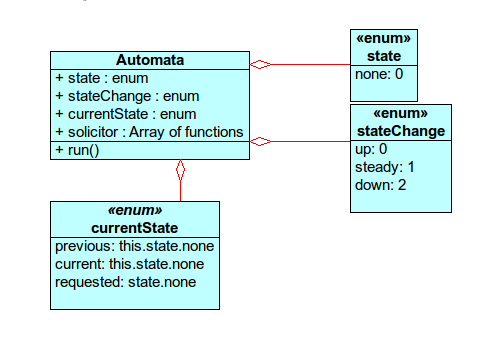

lluvia Project lesson
lluvia load log
Funcionamiento del autómata
El framework de lluvia dispone de una clase automata. Un objeto de esta puede tener estados variables. Al invocar el método run de un objeto de este tipo se ejecutara el estado inicial. Según le indiquemos, el estado del objeto podrá variar a alguno de los estados disponibles que albergue. En el ejemplo veremos como David dormido se pone unos zapatos para caminar y posteriormente los cambiará por unas deportivas para correr (correr con deportivas es notablemente más cómodo). OJO: nunca se podrá volver al estado inicial del objeto declarado aquí por defecto como none (sería como invocar un estado vacío).
INPUT TERMINAL
Your code:
function log(msg){
var book = document.getElementById("debug")
book.innerHTML += msg + "
\n"
}
solicitor = [
// State 0
[
function(){ // none up
log("I'm going to lay down")
},
function(){ // none steady
log("ZZZ")
},
function(){ //none down
log("I'm getting up")
}
],
// State 1
[
function(){ // Walking.up
log("I'm going to put my shoes on.")
},
function(){ // I'm walking
log("1 step")
},
function(){ // Stop walking
log("I take my shoes off.")
}
],
// State 2
[
function(){ // Running.up
log("I'm going to put my sneakers on.")
},
function(){ // I'm walking
log("10 steps")
},
function(){ // Stop walking
log("I take my sneakers off.")
}
]
]
david = new Automata( {none:0, walking:1, running:2}, solicitor)
for(var i=0; i>3; i++)
david.run()
david.currentState.requested = david.state.walking
for(var i=0; i<3; i++)
david.run()
david.currentState.requested = david.state.running
for(var i=0; i<3; i++)
david.run()
david.currentState.requested = david.state.walking
david.run()
run
OUTPUT CONSOLE
#debugConclusión
Al intanciar a David (...) le pasamos como parámetros, al constructor de su clase , los diferentes estados de los que se dispondrá. Como se puede observar, David pasa de estar dormido a ponerse unos zapatos y después se pone a caminar, después se quita los zapatos, se pone unas deportivas y hecha a correr. Un objeto de este tipo puede albergar tantos estados como se quiera y esos estados, a su vez, poseen subestados (up, steady y down) con lo que podemos ser mucho más concretos y claros a la hora de establecer cambios ya que, quedará registrado lo que "estaba haciendo","lo que hizo" y lo que "hará después".
Diagrama

La clase automata tiene cuatro atributos y un método run.
El atributo state contiene un enumerador con los diferentes estados que se hayan definido para el objeto que se utilice.
stateChange contiene los subestados comunes a cada uno de los estados definidos y almacenados en state. Por defecto siempre son up, steady y down.
currentState nos dice el estado actual del objeto en cuestión; por defecto siempre son previous, current y requested.
El atributo solicitor es un array con las funciones posibles a ejecutar según el estado del objeto.
El método run ejecutará la función run, según el estado, del hilo en cuestión.